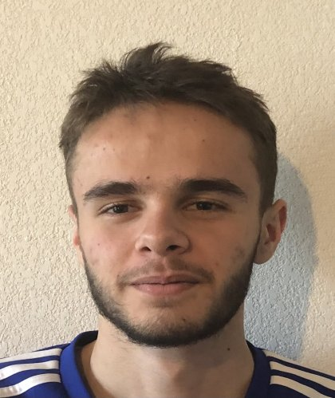

Je m'appelle Alexis, étudiant en 5e année à Epitech Montpellier, passionné par la création de jeux vidéo et les technologies innovantes. J'ai eu l'opportunité d'étudier à Saxion University of Applied Sciences aux Pays-Bas, une expérience qui m'a ouvert à de nouvelles perspectives sur le développement et la collaboration internationale.